Installation
install.packages("spacc") # CRAN
install.packages("pak") # development version
pak::pak("gcol33/spacc")Introduction
A species accumulation curve answers one question: how does the count
of species grow as more of a region is surveyed. Raw richness, the
number of species present, is the simplest answer, and it is the one the
base spacc() function returns. Richness treats a species
seen once and a species seen ten thousand times as equal contributions,
so two regions with identical species lists score the same even when one
is dominated by a single hyperabundant species and the other shares
individuals evenly. That difference matters for conservation triage, for
detecting disturbance, and for comparing surveys of unequal effort, and
it is invisible to richness alone.
This vignette covers the diversity-accumulation family in spacc: the
functions that track an abundance-aware diversity measure as sites are
added in spatial order, rather than a raw species count. The family is
built on Hill numbers, which place richness, Shannon diversity, and
Simpson diversity on one axis indexed by a single parameter \(q\). The same accumulation machinery
extends to beta diversity (how composition turns over across space), to
phylogenetic and functional diversity (where species carry evolutionary
or trait distances), and to coverage-standardised diversity (where
curves are read against sampling completeness rather than site count).
Each variant returns a typed S3 object with print(),
summary(), plot(), and
as.data.frame() methods, so the analysis idiom is the same
regardless of which diversity measure is tracked.
Uncertainty in spacc comes from one source. Every curve is computed from many random starting sites; the nearest-neighbour walk that orders the remaining sites depends on where it begins, so each starting seed produces a different curve. The package reports the across-seed mean and the 2.5% and 97.5% quantiles of those seed curves as a ribbon. There are no priors and no parametric error model. A wide ribbon means the curve is sensitive to where sampling starts, which is itself ecological information about spatial structure. The worked examples below all use a small number of seeds to keep the vignette fast; real analyses should use more, and the practical guidance section gives concrete numbers.
The diversity framework
Hill numbers (Hill 1973, Jost 2007, Chao et al. 2014) measure diversity as an effective number of species: the number of equally-abundant species that would yield the observed value of a diversity index. For a community with relative abundances \(p_i\) for species \(i = 1, \dots, S\), where \(p_i = n_i / N\), \(n_i\) is the count of species \(i\), \(N = \sum_i n_i\) is the total count, and \(S\) is the number of species present, the Hill number of order \(q\) is
\[ {}^{q}D = \left( \sum_{i=1}^{S} p_i^{q} \right)^{1/(1-q)}. \]
The order \(q\) controls how much weight rare species receive. At \(q = 0\) the term \(p_i^0 = 1\) for every present species, so \({}^{0}D = S\), plain richness, which ignores abundance entirely. The formula is undefined at \(q = 1\) because the exponent \(1/(1-q)\) diverges, but the limit exists and equals the exponential of Shannon entropy,
\[ {}^{1}D = \exp\!\left( -\sum_{i=1}^{S} p_i \log p_i \right), \]
which weights each species in proportion to its abundance and is read as the effective number of common species. At \(q = 2\) the value is the inverse Simpson concentration, \({}^{2}D = 1 / \sum_i p_i^2\), the effective number of dominant species. Hill numbers are non-increasing in \(q\): \({}^{q}D \ge {}^{q'}D\) whenever \(q \le q'\), because raising \(q\) shifts weight toward the most abundant species and away from the long tail of rare ones. The gap between \({}^{0}D\) and \({}^{2}D\) is therefore a direct read on dominance: a wide gap means a few species hold most of the individuals.
The same numbers decompose across space. Following Jost (2007), regional (gamma) diversity is the multiplicative product of mean local (alpha) diversity and turnover (beta):
\[ {}^{q}D_{\gamma} = {}^{q}D_{\alpha} \times {}^{q}D_{\beta}. \]
Here \({}^{q}D_{\gamma}\) is the Hill number of the pooled community across all sites, \({}^{q}D_{\alpha}\) is the effective number of species in an average site, and \({}^{q}D_{\beta} = {}^{q}D_{\gamma} / {}^{q}D_{\alpha}\) is the effective number of completely distinct communities. Beta ranges from 1, when every site has identical composition, up to the number of sites, when no two sites share a species. Because alpha is a generalised (power) mean of per-site values, the decomposition is exact at every \(q\), and beta is independent of alpha in the sense Jost defines, so a region can have high local diversity with low turnover or the reverse.
Simulating data
The examples use a single simulated dataset with known structure, so the curves can be read against ground truth. Each species is placed at a random centre in a 100-by-100 plane, and its expected abundance at a site falls off as a Gaussian kernel of the squared distance from that centre. A site near a species’ centre has high expected abundance for that species; a site far away has almost none. Counts are then drawn from a Poisson distribution with that expected value. This is a thinned Poisson point process viewed at the site level, and it is the standard way to generate spatially aggregated community data: species are common where conditions suit them and rare elsewhere, which is what creates spatial turnover.
library(spacc)
set.seed(123)
n_sites <- 60
n_species <- 30
coords <- data.frame(
x = runif(n_sites, 0, 100),
y = runif(n_sites, 0, 100)
)
# Abundance matrix with spatial clustering
species <- matrix(0L, n_sites, n_species)
for (sp in seq_len(n_species)) {
cx <- runif(1, 10, 90)
cy <- runif(1, 10, 90)
lambda <- 5 * exp(-0.001 * ((coords$x - cx)^2 + (coords$y - cy)^2))
species[, sp] <- rpois(n_sites, lambda)
}
colnames(species) <- paste0("sp", seq_len(n_species))Three parameters set the ecology of the simulation. The peak intensity 5 is the expected count of a species at its own centre, so each species tops out at a handful of individuals per site. The decay rate 0.001 in the exponent sets the range over which a species stays common: at a squared distance of 1000 units, roughly 32 units away, expected abundance has dropped to \(5 e^{-1} \approx 1.8\), and by 60 units it is near zero. Smaller decay rates spread species more widely and flatten turnover; larger rates concentrate them and sharpen it. The 60 sites in a 100-by-100 plane give a mean nearest-neighbour spacing of roughly 6 units, well inside each species’ range, so neighbouring sites share many species and the nearest-neighbour accumulation walk picks up turnover gradually.
The resulting matrix is sites-by-species with integer counts. Most spacc functions accept either this abundance form or a presence/absence version obtained by thresholding at zero. The first few entries show the spatial structure directly: a given site holds large counts for the few species centred nearby and zeros for the rest.
Hill number accumulation
spaccHill() tracks Hill numbers along the spatial
accumulation curve. It orders sites by nearest-neighbour distance from a
random seed, pools their abundances cumulatively, and computes \({}^{q}D\) of the pooled community at each
step, for every requested order \(q\).
The result is one curve per \(q\), each
averaged over n_seeds random starts.
hill <- spaccHill(species, coords, q = c(0, 1, 2), n_seeds = 20, progress = FALSE)
hill
#> spacc Hill numbers: 60 sites, 30 species, 20 seeds
#> Orders (q): 0, 1, 2
#> Method: knn
library(ggplot2)
plot(hill) +
theme(panel.background = element_rect(fill = "transparent"),
plot.background = element_rect(fill = "transparent"))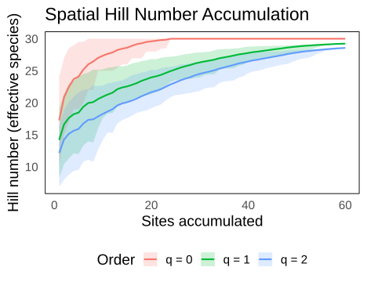
Hill number accumulation for q = 0, 1, 2.
The three curves separate cleanly. The \(q = 0\) curve is ordinary richness and climbs toward the regional pool of 30 species. The \(q = 1\) and \(q = 2\) curves sit below it and rise more slowly, because they count effective common and dominant species rather than all present species. The reason higher \(q\) accumulates more slowly is structural: a new site adds a rare species to the \(q = 0\) count immediately, but that species barely moves \({}^{1}D\) or \({}^{2}D\) until it accumulates enough individuals to shift the relative-abundance vector. The gap between the curves at any site count is the dominance signature at that spatial scale.
The numeric curve is available through as.data.frame(),
which returns the across-seed mean and the 2.5%/97.5% quantile band per
site, stacked by \(q\).
hill_df <- as.data.frame(hill)
head(hill_df, 3)
#> q sites mean lower upper sd
#> 1 0 1 17.25 9.95 24.000 4.115120
#> 2 0 2 20.85 15.00 27.000 3.787445
#> 3 0 3 22.50 16.95 28.525 3.220003
# Final-site values per q
hill_df[hill_df$sites == max(hill_df$sites), c("q", "mean", "lower", "upper")]
#> q mean lower upper
#> 60 0 30.00000 30.00000 30.00000
#> 120 1 29.23513 29.23513 29.23513
#> 180 2 28.56626 28.56626 28.56626The final-site row gives the regional effective diversity at each
order. Here \({}^{0}D\) recovers all 30
species, while \({}^{1}D\) and \({}^{2}D\) are lower, quantifying how uneven
the pooled community is. The summary() method returns the
same quantities in long form with an adjustable ci_level,
which is useful for plotting custom intervals.
hs <- summary(hill, ci_level = 0.90)
tail(hs, 3)
#> q sites mean lower upper
#> 178 2 58 28.48275 28.36059 28.50306
#> 179 2 59 28.52547 28.44862 28.54513
#> 180 2 60 28.56626 28.56626 28.56626Reading the three orders together is more informative than any one of them. If the \(q = 0\) curve keeps rising while \(q = 2\) has flattened, the region is still gaining rare species but its dominant structure is already captured; further sampling adds to the species list without changing what the community is mostly made of.
Alpha, beta, and gamma diversity
The accumulation curve describes the pooled community as it grows.
The multiplicative partition describes the fixed set of all sites and
splits its diversity into a local and a turnover part.
alphaDiversity() returns per-site Hill numbers,
gammaDiversity() returns the pooled regional values, and
diversityPartition() combines them into the full
alpha-beta-gamma decomposition.
# Alpha diversity: per-site Hill numbers
alpha <- alphaDiversity(species, q = c(0, 1, 2))
colMeans(alpha)
#> q0 q1 q2
#> 15.06667 12.39927 10.61170
# Gamma diversity: pooled regional diversity
gamma <- gammaDiversity(species, q = c(0, 1, 2))
gamma
#> q0 q1 q2
#> 30.00000 29.23513 28.56626
# Full partition: gamma = alpha * beta
partition <- diversityPartition(species, q = c(0, 1, 2))
partition
#> Alpha-Beta-Gamma Diversity Partitioning
#> 60 sites, 30 species
#>
#> q alpha beta gamma
#> 0 15.07 1.99 30.00
#> 1 11.42 2.56 29.24
#> 2 8.81 3.24 28.57
#>
#> Interpretation:
#> Alpha = mean effective species per site
#> Beta = effective number of communities (1 to n_sites)
#> Gamma = regional effective species (gamma = alpha x beta)The partition object prints alpha, beta, and gamma side by side for
each order. Mean alpha is much smaller than gamma here because each site
holds only the few species whose centres are nearby, while the region
pools all of them. Beta, their ratio, measures how many effectively
distinct communities the region contains. The summary()
method adds a normalised beta on a 0-to-1 scale, \(({}^{q}D_{\beta} - 1)/(n - 1)\), which
rescales turnover so that 0 is a single homogeneous community and 1 is
complete distinctness across the \(n\)
sites.
summary(partition)
#> q alpha beta gamma n_sites beta_normalized
#> q0 0 15.066667 1.991150 30.00000 60 0.01679916
#> q1 1 11.422875 2.559350 29.23513 60 0.02642966
#> q2 2 8.813323 3.241258 28.56626 60 0.03798743Beta falls as \(q\) rises. At \(q = 0\) turnover is driven by the long tail of rare, locally restricted species, which inflates the effective number of communities. At \(q = 2\) only the dominant species count, and dominants tend to be the widespread species shared across sites, so the region looks more homogeneous. This ordering, \(\beta_0 \ge \beta_1 \ge \beta_2\), is the typical pattern for aggregated data and is worth checking: a reversal usually signals that rare species are widespread while common ones are patchy, which is unusual and worth investigating.
Checking and interpreting with uncertainty
Every accumulation curve in spacc carries a confidence band built
from the spread across seed starts. The columns to read are
mean, lower, and upper from
as.data.frame() or summary(). The band is
widest early in the curve, where the identity of the seed site
dominates, and narrows as accumulation covers most of the region and the
curves converge on the same pooled community.
ci <- as.data.frame(hill)
ci0 <- ci[ci$q == 0, ]
# Width of the 95% band at a few site counts
data.frame(sites = c(5, 20, 40, 60),
width = ci0$upper[c(5, 20, 40, 60)] - ci0$lower[c(5, 20, 40, 60)])
#> sites width
#> 1 5 10.525
#> 2 20 2.000
#> 3 40 0.000
#> 4 60 0.000The band width shrinks toward the right because all seed walks eventually pool the same sites. A band that stays wide at high site counts would indicate that the order of accumulation still matters near saturation, which happens when the region has strong large-scale structure that some seeds traverse and others do not.
Beyond the curve, two diagnostics summarise the dominance structure
of the communities directly. evenness() divides the Hill
number at each order by richness, giving \(E_q
= {}^{q}D / {}^{0}D\), a value in \([0,
1]\) where 1 is a perfectly even community and small values mean
a few species dominate.
ev <- evenness(species, q = seq(0.1, 3, by = 0.1))
ev
#> Evenness (hill): 60 sites, 30 species
#> q range: [0.1, 3.0]
#> Mean evenness: E_1 = 0.823, E_2 = 0.704
#> Regional evenness: E_1 = 0.975, E_2 = 0.952
plot(ev) +
theme(panel.background = element_rect(fill = "transparent"),
plot.background = element_rect(fill = "transparent"))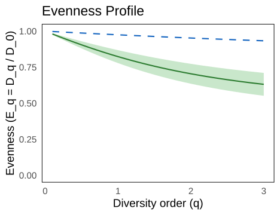
Hill evenness profile across orders.
The evenness profile falls with \(q\) because higher orders divide a
dominance-weighted diversity by full richness. A profile that drops
steeply indicates strong dominance; one that stays near 1 indicates a
community where individuals are spread evenly across species. Pielou’s
\(J\) and Simpson evenness are
available through type = "pielou" and
type = "simpson" for single-number summaries at \(q = 1\) and \(q =
2\).
evenness(species, type = "pielou")
#> Evenness (pielou): 60 sites, 30 species
#> Mean Pielou's J: 0.923
#> Regional J: 0.992The continuous diversity profile, \({}^{q}D\) as a function of \(q\), is the most complete dominance
diagnostic because it shows the whole decline from richness to inverse
Simpson rather than three points. diversityProfile()
evaluates Hill numbers over a grid of \(q\) for each site and for the pooled
region.
prof <- diversityProfile(species, q = seq(0, 3, by = 0.2))
prof
#> Diversity profile: 60 sites, 30 species
#> q range: [0.0, 3.0] (16 values)
#> Per-site: mean D_0 = 15.1, mean D_1 = 12.4, mean D_2 = 10.6
#> Regional: D_0 = 30.0, D_1 = 29.2, D_2 = 28.6
plot(prof) +
theme(panel.background = element_rect(fill = "transparent"),
plot.background = element_rect(fill = "transparent"))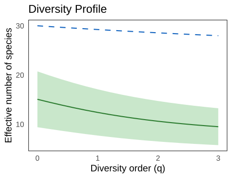
Diversity profile: per-site mean (solid) and regional gamma (dashed).
The solid line is the mean per-site profile and the dashed line is the regional profile. The vertical gap between them at any \(q\) is beta diversity at that order, read off the same plot. Two regions can have identical richness, the \({}^{0}D\) intercept, yet very different profiles: the one whose profile drops faster is more dominated. Comparing profiles is more honest than comparing single indices because it does not commit to one value of \(q\) before looking at the data.
Beta, functional, and phylogenetic beta diversity
Taxonomic beta diversity asks how the species list turns over across
space. spaccBeta() partitions it into two pieces along the
accumulation curve, following Baselga (2010): turnover, where new sites
bring different species in exchange for old ones, and nestedness, where
new sites are species-poor subsets of what is already accumulated. The
two sum to total beta.
pa <- (species > 0) * 1L
beta <- spaccBeta(pa, coords, n_seeds = 20, progress = FALSE)
beta
#> spacc beta diversity: 60 sites, 20 seeds
#> Index: sorensen, Method: knn
#> Mean final beta: 0.569 (turnover: 0.000, nestedness: 0.569)
plot(beta) +
theme(panel.background = element_rect(fill = "transparent"),
plot.background = element_rect(fill = "transparent"))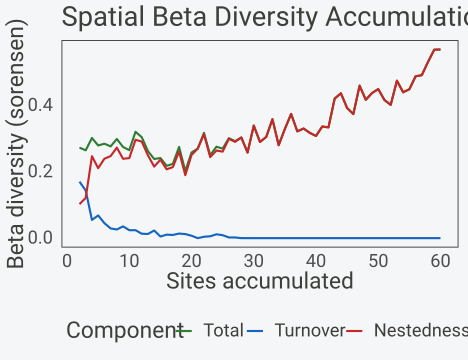
Spatial beta diversity accumulation with turnover/nestedness.
For this aggregated simulation turnover dominates: neighbouring sites
hold different species because each species is confined near its own
centre, so expanding spatially mostly replaces species rather than
nesting them. The numeric partition is in as.data.frame(),
which gives the across-step means and their standard deviations.
tail(as.data.frame(beta), 3)
#> sites beta_total beta_turnover beta_nestedness beta_total_sd
#> 57 57 0.5314725 0 0.5314725 0.08745545
#> 58 58 0.5681181 0 0.5681181 0.07406815
#> 59 59 0.5687254 0 0.5687254 0.05952124
#> beta_turnover_sd beta_nestedness_sd
#> 57 0 0.08745545
#> 58 0 0.07406815
#> 59 0 0.05952124The Hill-number framework offers a complementary beta.
spaccHillBeta() computes gamma, alpha, and their ratio beta
at each accumulation step, for each \(q\), so beta is itself an effective number
of communities rather than a dissimilarity in \([0,1]\). This is the Jost (2007)
decomposition tracked along the curve.
The partition depends on the resolution at which assemblages are
compared (Jones et al. 2025). Passing pool, a grouping of
the sites such as habitat type, repeats the partition between pooled
assemblages along the same orders, so site-level and pool-level turnover
can be read side by side. Here the sites are pooled into three bands
across the study area:
band <- cut(coords$x, breaks = c(-Inf, 33, 66, Inf), labels = c("west", "centre", "east"))
beta_pool <- spaccBeta(pa, coords, n_seeds = 20, progress = FALSE, pool = band)
beta_pool
#> spacc beta diversity: 60 sites, 20 seeds
#> Index: sorensen, Method: knn
#> Mean final beta: 0.594 (turnover: 0.000, nestedness: 0.594)
#> Mean final beta, 3 pools: 0.044 (turnover: 0.000, nestedness: 0.044)
plot(beta_pool, resolution = "both") +
theme(panel.background = element_rect(fill = "transparent"),
plot.background = element_rect(fill = "transparent"))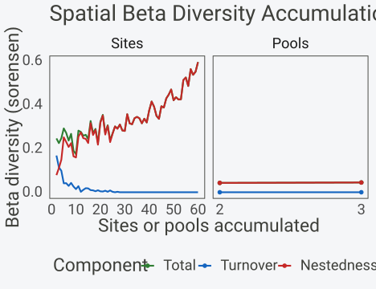
Beta partition between sites and between pooled bands.
hb <- spaccHillBeta(species, coords, q = c(0, 1, 2), n_seeds = 15, progress = FALSE)
hb
#> spacc Hill beta diversity: 60 sites, 30 species, 15 seeds
#> Orders (q): 0, 1, 2
#> q = 0: mean final beta = 1.99
#> q = 1: mean final beta = 2.56
#> q = 2: mean final beta = 3.24
plot(hb, component = "beta") +
theme(panel.background = element_rect(fill = "transparent"),
plot.background = element_rect(fill = "transparent"))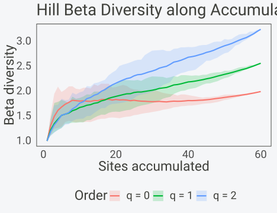
Hill beta (effective number of communities) along accumulation.
Beta rises as sites accumulate because each new site can only add distinctness, and it rises fastest at \(q = 0\) where rare restricted species count most. The Baselga partition and the Hill partition answer different questions: Baselga asks whether dissimilarity is replacement or loss, while Hill beta asks how many distinct communities the accumulated set is worth. Reporting both is reasonable when the distinction matters.
Part of that rise is a sampling effect. Each site is an incomplete sample, so the alpha of a few sites and the gamma of their pool are estimated at different completeness, and their ratio grows with the number of sites even where composition does not change (Chao et al. 2023). In a region where every site samples the same species pool, true beta is 1 at every step:
set.seed(42)
lambda <- rlnorm(80, -0.5, 1.3)
homog <- matrix(rpois(60 * 80, rep(lambda, each = 60)), nrow = 60)
homog_xy <- data.frame(x = runif(60, 0, 100), y = runif(60, 0, 100))
hb_obs <- spaccHillBeta(homog, homog_xy, n_seeds = 15, progress = FALSE, seed = 1)
hb_std <- spaccHillBeta(homog, homog_xy, n_seeds = 15, progress = FALSE, seed = 1,
standardize = "coverage")
at <- c(2, 10, 30, 60)
drift <- rbind(observed = colMeans(hb_obs$beta$q0)[at],
standardised = colMeans(hb_std$beta$q0)[at])
colnames(drift) <- paste(at, "sites")
drift
#> 2 sites 10 sites 30 sites 60 sites
#> observed 1.331141 1.766511 1.842301 1.912061
#> standardised 1.052576 1.019351 1.021101 1.017954The observed \(q = 0\) beta climbs
from about 1.3 at two sites to 1.9 at sixty, while the
coverage-standardised beta stays close to 1. With
standardize = "coverage", gamma and alpha are both brought
to the same sample coverage before their ratio is taken (the
iNEXT.beta3D standardisation), and the result carries the four
dissimilarities of Chao et al. (2023), such as the Sorensen-type
1-CqN. A fixed coverage = 0.9, for example,
puts every step and every dataset on the same completeness level.
When species carry traits, functional beta weights turnover by how
different the incoming and outgoing species are in trait space. Passing
traits to spaccBeta() scales the Baselga
components by the mean pairwise trait distance of the species that
differ, so replacing a species with a near-identical one registers
little beta even though the species list changed.
# Simulate two continuous traits
traits <- data.frame(
body_size = rnorm(n_species),
wing_length = rnorm(n_species)
)
rownames(traits) <- colnames(species)
beta_func <- spaccBeta(pa, coords, traits = traits, n_seeds = 20, progress = FALSE)
plot(beta_func) +
theme(panel.background = element_rect(fill = "transparent"),
plot.background = element_rect(fill = "transparent"))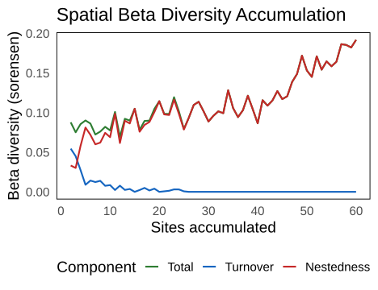
Functional beta diversity accumulation.
Functional beta is lower than taxonomic beta whenever the species
that turn over are functionally similar, which is the common case in
trait-redundant assemblages. The phylogenetic analogue,
spaccBeta() with a tree argument, does the
same with a phylogenetic distance matrix from a tree, weighting turnover
by evolutionary divergence so that swapping close relatives counts for
less than swapping distant lineages.
library(ape)
#>
#> Attaching package: 'ape'
#> The following object is masked from 'package:spacc':
#>
#> ace
tree <- rcoal(n_species, tip.label = colnames(species))
beta_phylo <- spaccBeta(pa, coords, tree = tree, n_seeds = 20, progress = FALSE)
plot(beta_phylo) +
theme(panel.background = element_rect(fill = "transparent"),
plot.background = element_rect(fill = "transparent"))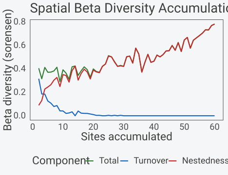
Phylogenetic beta diversity accumulation.
Comparing taxonomic, functional, and phylogenetic beta on the same data separates three kinds of turnover. High taxonomic but low functional and phylogenetic beta means the region swaps species that are ecologically and evolutionarily interchangeable. High beta on all three means the region replaces distinct lineages with distinct ecological roles, which is the pattern that flags genuine biogeographic boundaries.
Phylogenetic and functional accumulation
Beyond beta, the diversity of the accumulated community itself can be
measured on a tree or in trait space. spaccPhylo() tracks
phylogenetic diversity along the curve. Mean pairwise distance (MPD) is
the average phylogenetic distance between all species present, sensitive
to deep tree structure; mean nearest taxon distance (MNTD) is the
average distance to each species’ closest relative, sensitive to
terminal clustering; and Faith’s PD is the total branch length spanned
by the accumulated species.
phylo_acc <- spaccPhylo(pa, coords, tree,
metric = c("mpd", "mntd", "pd"),
n_seeds = 20, progress = FALSE)
plot(phylo_acc) +
theme(panel.background = element_rect(fill = "transparent"),
plot.background = element_rect(fill = "transparent"))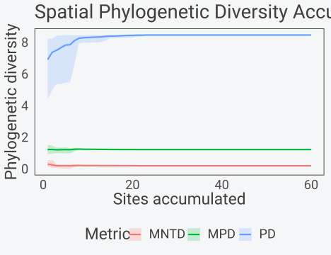
Phylogenetic diversity accumulation.
PD rises steadily as more lineages are added, much like richness, because each new species contributes branch length. MPD and MNTD behave differently: they can plateau early or even decline if the species added late are close relatives of ones already present, since they measure average distances rather than totals. A flat MPD with a rising PD says the region keeps adding species but not new deep branches.
PD counts every unit of branch length as a feature that all
descendants still carry. EvoHeritage (Rosindell et al. 2024) adds
attrition: features arise along a branch and are lost at rate \(\rho\) per unit length, so a branch of
length \(L\) passes on a fraction \(e^{-\rho L}\) of what entered it, and a
feature counts once if it survives to at least one accumulated species.
At \(\rho = 0\) this is PD; as \(\rho\) grows, long internal branches lose
what they carry and the value tends to the number of species.
metric = "evoheritage" with a vector rho gives
one curve per rate.
evo_acc <- spaccPhylo(pa, coords, tree,
metric = "evoheritage", rho = c(0, 0.5, 5),
n_seeds = 20, progress = FALSE)
evo_df <- summary(evo_acc)
evo_df[evo_df$sites == max(evo_df$sites), c("metric", "mean", "lower", "upper")]
#> metric mean lower upper
#> 60 evoheritage_rho0 8.501226 8.501226 8.501226
#> 120 evoheritage_rho0.5 8.428235 8.428235 8.428235
#> 180 evoheritage_rho5 13.816928 13.816928 13.816928
sum(colSums(pa) > 0) # observed richness
#> [1] 30The \(\rho = 0\) curve is PD. Values are in standardised units, the heritage at the end of a single branch of unit length, so a rate changes both how much of the deep branches survives and what one unit means. The limit of one unit per species is reached only once \(\rho L\) is large for the shortest terminal branches, which on a coalescent tree such as this one takes rates far above 5.
Functional accumulation works the same way in trait space.
spaccFunc() tracks functional dispersion (FDis), the
abundance-weighted mean distance of species to the community centroid,
and functional richness (FRic), the volume of trait space occupied. FRic
needs more species than traits to define a hull, so with a two-trait
dataset it stabilises once enough species accumulate.
plot(func_acc) +
theme(panel.background = element_rect(fill = "transparent"),
plot.background = element_rect(fill = "transparent"))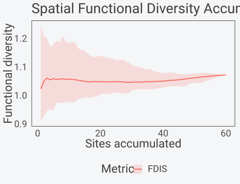
Functional diversity accumulation.
FDis tends to saturate quickly because once the community spans the main axes of trait variation, adding species near the centroid does not move the mean distance much. A FDis curve that keeps climbing indicates the region is still gaining functionally extreme species at large spatial scales.
metric = "K" aggregates four facets into one index
between 0 and 1 (Wojcik et al. 2024): the share of the trait axis
covered, the evenness of abundances, the evenness of the spacing along
the trait axis, and the spread of abundance around the mean trait. Each
facet is 1 for species spread uniformly along the axis with equal
abundances, and K is their geometric mean, so the facet curves show
which aspect a new site adds.
func_k <- spaccFunc(species, coords, traits, metric = "K",
n_seeds = 20, progress = FALSE)
k_df <- summary(func_k)
k_df[k_df$sites %in% c(1, 10, max(k_df$sites)), c("metric", "sites", "mean")]
#> metric sites mean
#> 1 k_richness 1 0.7673825
#> 10 k_richness 10 0.9548999
#> 60 k_richness 60 1.0000000
#> 61 k_biomass_evenness 1 0.8228742
#> 70 k_biomass_evenness 10 0.8523109
#> 120 k_biomass_evenness 60 0.9583984
#> 121 k_trait_evenness 1 0.7044989
#> 130 k_trait_evenness 10 0.7569841
#> 180 k_trait_evenness 60 0.7650405
#> 181 k_dispersion 1 0.8611679
#> 190 k_dispersion 10 0.6107553
#> 240 k_dispersion 60 0.5909673
#> 241 K 1 0.7803655
#> 250 K 10 0.7800032
#> 300 K 60 0.8113318The continuous-\(q\) profile extends
to both paradigms. diversityProfile() with a
tree argument gives phylogenetic Hill numbers across \(q\), and with a traits
argument gives trait-similarity Hill numbers, each reading as an
effective number of lineages or functional units that declines with
\(q\) exactly as the taxonomic profile
does.
fp <- diversityProfile(species, traits = traits, q = seq(0, 3, by = 0.5))
fp
#> Functional diversity profile: 60 sites, 30 species
#> q range: [0.0, 3.0] (7 values)
#> Per-site: mean D_0 = 1.4, mean D_1 = 1.4, mean D_2 = 1.4
#> Regional: D_0 = 1.5, D_1 = 1.5, D_2 = 1.4The ratio of the taxonomic to the phylogenetic Hill number is never
below 1, and equals 1 only when all species are equally and maximally
distinct (a star tree). spaccRedundancy() tracks this ratio
along the accumulation, with a tree or with
traits (similarity-sensitive Hill numbers, Leinster &
Cobbold 2012). A ratio that rises as sites accumulate says the region
keeps adding species that are close relatives of, or functionally
similar to, those already present.
red <- spaccRedundancy(species, coords, tree = tree, n_seeds = 20, progress = FALSE)
red
#> spacc phylogenetic redundancy: 60 sites, 30 species, 20 seeds
#> Orders (q): 0, 1, 2
#> q = 0: mean final redundancy = 8.59
#> q = 1: mean final redundancy = 16.32
#> q = 2: mean final redundancy = 20.93
plot(red) +
theme(panel.background = element_rect(fill = "transparent"),
plot.background = element_rect(fill = "transparent"))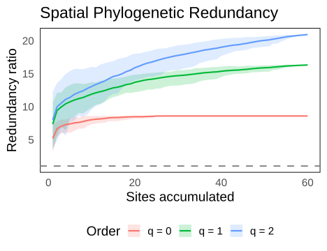
Taxonomic over phylogenetic Hill number along accumulation.
Rao’s quadratic entropy
Rao’s quadratic entropy combines relative abundance with pairwise
distance between species, giving an abundance-weighted measure of
phylogenetic or functional dispersion (Rao 1982). It is defined as \(Q = \sum_{i} \sum_{j} p_i p_j d_{ij}\),
where \(p_i\) is the relative abundance
of species \(i\) and \(d_{ij}\) is the distance between species
\(i\) and \(j\) on the tree or in trait space. Both
spaccPhylo() and spaccFunc() expose it through
metric = "rao".
phylo_rao <- spaccPhylo(species, coords, tree,
metric = "rao",
n_seeds = 20, progress = FALSE)
plot(phylo_rao) +
theme(panel.background = element_rect(fill = "transparent"),
plot.background = element_rect(fill = "transparent"))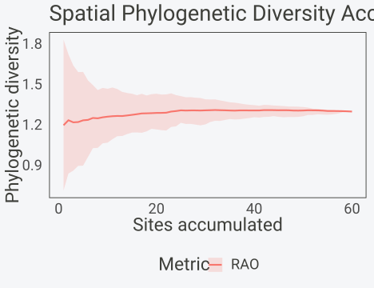
Phylogenetic Rao’s Q accumulation.
For functional Rao the species distance is the Euclidean distance in trait space:
func_rao <- spaccFunc(species, coords, traits,
metric = "rao",
n_seeds = 20, progress = FALSE)
tail(as.data.frame(func_rao), 3)
#> metric sites mean lower upper sd
#> 58 rao 58 1.461826 1.458388 1.466472 0.003009061
#> 59 rao 59 1.463061 1.460878 1.466638 0.002161477
#> 60 rao 60 1.465947 1.465947 1.465947 0.000000000With presence/absence data Rao’s Q reduces to an equal-weight form; with abundances it weights each species pair by the product of relative abundances. The phylogenetic and functional backends carry abundances in double precision, so continuous values such as percent cover or biomass are used directly:
cover <- species / max(species) # fractional values in [0, 1]
func_rao_cover <- spaccFunc(cover, coords, traits,
metric = "rao", n_seeds = 10, progress = FALSE)
tail(as.data.frame(func_rao_cover), 3)
#> metric sites mean lower upper sd
#> 58 rao 58 1.464865 1.458584 1.468526 3.557764e-03
#> 59 rao 59 1.465415 1.461466 1.466766 2.058509e-03
#> 60 rao 60 1.465947 1.465947 1.465947 2.220446e-16Rao’s Q saturates faster than richness because once the community spans the main distance structure, adding more species near existing ones barely changes the abundance-weighted mean distance. It is the natural single-number summary when both abundance and pairwise distance matter, and it connects to Hill numbers: the effective number form of Rao is a functional or phylogenetic Hill number at \(q = 2\).
Coverage-based diversity
Comparing curves at equal site count is not always fair, because a
fixed number of sites can represent very different fractions of the
underlying community depending on how abundant the organisms are. Sample
coverage is the estimated proportion of total community abundance
belonging to the species already seen, and standardising by coverage
rather than site count puts surveys of unequal effort on the same
footing (Chao & Jost 2012). spaccCoverage() tracks
coverage alongside richness as sites accumulate.
cov <- spaccCoverage(species, coords, n_seeds = 20, progress = FALSE)
cov
#> spacc coverage (Chao-Jost 2012): 60 sites, 30 species, 20 seeds
#> Mean final coverage: 100.0%
#> Mean final richness: 30.0 species
plot(cov) +
theme(panel.background = element_rect(fill = "transparent"),
plot.background = element_rect(fill = "transparent"))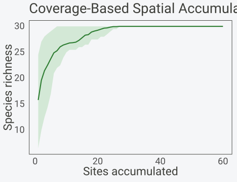
Coverage-based spatial rarefaction.
The default Chao-Jost estimator uses singleton and doubleton counts and assumes individuals are sampled independently. For plot-based data where sites are the sampling units, the Chiu (2023) sample-based estimator is more appropriate because it uses incidence frequencies across sites instead.
cov_chiu <- spaccCoverage(species, coords, coverage = "chiu",
n_seeds = 20, progress = FALSE)
tail(as.data.frame(cov_chiu), 3)
#> sites richness individuals coverage richness_sd coverage_sd
#> 58 58 30 2276.45 1 0 0
#> 59 59 30 2293.70 1 0 0
#> 60 60 30 2308.00 1 0 0Once coverage is tracked, richness can be read at fixed completeness
levels. interpolateCoverage() returns the richness each
seed curve reached at the requested coverage targets, interpolating
within the observed range.
interp <- interpolateCoverage(cov, target = c(0.90, 0.95))
summary(interp)
#> C90 C95
#> Min. :10.80 Min. :15.94
#> 1st Qu.:15.44 1st Qu.:18.25
#> Median :18.00 Median :20.93
#> Mean :17.98 Mean :20.57
#> 3rd Qu.:20.36 3rd Qu.:22.02
#> Max. :25.00 Max. :26.93The same idea applied to Hill numbers gives coverage-standardised
diversity at every order. spaccHillCoverage() computes Hill
numbers and coverage together, and plotting against coverage rather than
site count shows diversity at matched completeness.
hc <- spaccHillCoverage(species, coords, q = c(0, 1, 2),
n_seeds = 15, progress = FALSE)
plot(hc, xaxis = "coverage") +
theme(panel.background = element_rect(fill = "transparent"),
plot.background = element_rect(fill = "transparent"))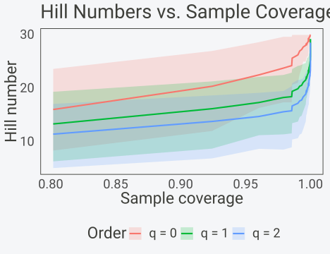
Hill numbers plotted against sample coverage.
Reading diversity against coverage is the recommended way to compare two regions of unequal sampling effort: pick a coverage level both reach, such as 95%, and compare the diversity there. Comparing at equal site count instead would penalise the region whose organisms are rarer, because the same site count buys it less coverage.
Custom diversity metrics
spaccDiversity() accumulates any user-supplied index
along a spatial ordering. At each step the cumulative community is
passed to a function that returns a single number, so indices spacc does
not implement directly can still be tracked along the accumulation
curve.
# Shannon entropy of the cumulative community
shannon <- function(comm) {
p <- comm[comm > 0] / sum(comm)
-sum(p * log(p))
}
div <- spaccDiversity(species, coords, shannon,
method = "knn", n_seeds = 20, progress = FALSE)
plot(div, ylab = "Cumulative Shannon entropy") +
theme(panel.background = element_rect(fill = "transparent"),
plot.background = element_rect(fill = "transparent"))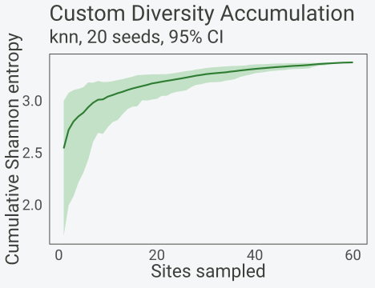
Custom (Shannon entropy) accumulation curve.
The function receives a named vector of cumulative abundances (or 0/1
incidences when incidence = TRUE), plus any extra arguments
passed through .... The result inherits the
spacc class, so summary(),
as.data.frame(), and predict() apply. The
plot() method uses a metric-neutral axis label by default;
set ylab to name the index. Available orderings are
"knn", "kncn", "nn_walk",
"random", and "collector". Because the index
is an arbitrary R function it runs slower than the compiled metrics
while accepting any definition, so it is best kept for indices that are
not already built in.
Practical guidance
Diversity accumulation offers more knobs than plain richness, and a few conventions keep results comparable and defensible.
Which \(q\) to report. Report all three of \(q = 0\), \(q = 1\), and \(q = 2\) together rather than choosing one. The triple \({}^{0}D, {}^{1}D, {}^{2}D\) shows richness, common-species diversity, and dominant-species diversity in one row, and the gap between them is the dominance signal. If a single number is forced, \(q = 1\) is the least arbitrary because it weights species exactly by abundance and is the only order where the diversity decomposition is fully symmetric. Use \(q = 0\) when rare species are the conservation target and \(q = 2\) when dominance or invasion is the question.
Abundance versus incidence. Use abundance data
whenever counts are available, because every order above \(q = 0\) needs them; presence/absence
collapses all orders to richness and discards the dominance information
the Hill framework exists to capture. Beta partitioning with
spaccBeta() runs on presence/absence by design, but Hill,
functional, and phylogenetic diversity should be fed counts, cover, or
biomass. The functional and phylogenetic backends accept non-integer
abundances, so percent cover in \([0,1]\) works directly.
Trait and tree minimums. Functional richness (FRic) needs at least one more species than traits to define a convex hull, so with 4 traits keep at least 5 species per accumulation step and prefer 10 or more for a stable hull. Rao’s Q and FDis work with fewer but become noisy below about 5 species. For trait distances use at least 2 traits; a single trait reduces functional diversity to a one-dimensional range and the convex hull degenerates. Phylogenetic metrics need a tree covering every species in the matrix, and MPD and MNTD stabilise with roughly 15 or more species; below 10 they swing widely from one or two pairs.
Number of seeds. The ribbon width is set by the
spread across seeds, so more seeds give a smoother, narrower band. Use
at least 50 seeds for reporting and 100 or more when the confidence band
itself is the result. The examples here use 10 to 20 to keep the build
fast, which is too few for publication. Set seed = for
reproducibility, since the seed sites are drawn at random.
Minimum sample size. Coverage-based comparison needs
each region to reach the common coverage target; below about 20 sites
with aggregated data, coverage often does not climb past 90%, and
interpolation to a higher target returns NA. For the
multiplicative partition, beta is unstable with fewer than about 5 sites
because alpha is a mean over very few values. Aim for at least 20 sites
for any diversity-accumulation analysis and 30 or more before reading
turnover.
When not to use these. Do not compute Rao’s Q or any abundance-weighted metric with very few species, roughly under 5, because the abundance-weighted mean distance is then driven by one or two pairs and the curve is meaningless. Do not use functional metrics with a single trait, where the hull collapses and FRic is undefined. Do not standardise by coverage when one region cannot reach the target coverage at all; compare at the highest coverage both attain, or fall back to site-based curves and say so. Finally, treat a wide confidence ribbon as a possible artefact of too few seeds before reading it as biological signal.
The table below summarises which function fits which question.
| Question | Function | Input | Key metric |
|---|---|---|---|
| How does effective diversity grow with area | spaccHill() |
abundance | \({}^{q}D\) per order |
| How is regional diversity split locally vs across sites | diversityPartition() |
abundance | alpha, beta, gamma |
| Is turnover replacement or species loss | spaccBeta() |
presence/absence | turnover, nestedness |
| How many distinct communities (Hill beta) | spaccHillBeta() |
abundance | beta per order |
| Does turnover involve distinct traits or lineages |
spaccBeta(traits=), spaccBeta(tree=)
|
P/A + traits/tree | weighted beta |
| How does evolutionary or trait diversity accumulate |
spaccPhylo(), spaccFunc()
|
abundance + tree/traits | MPD, MNTD, PD, EvoHeritage, FDis, FRic |
| Abundance-weighted trait/lineage dispersion |
spaccPhylo(metric="rao"),
spaccFunc(metric="rao")
|
abundance + tree/traits | Rao’s Q |
| Fair comparison under unequal effort |
spaccCoverage(), spaccHillCoverage()
|
abundance | coverage-standardised |
| An index spacc does not implement | spaccDiversity() |
any | user function |
The whole family shares one analysis idiom. Simulate or load a
sites-by-species matrix, call the function with coordinates, read the
curve with as.data.frame() or summary(), and
plot it with the across-seed ribbon. The choice of measure, taxonomic,
functional, phylogenetic, or coverage-standardised, changes what the
y-axis means, not how the result is obtained.
References
- Baselga, A. (2010). Partitioning the turnover and nestedness components of beta diversity. Global Ecology and Biogeography, 19, 134-143.
- Baselga, A. (2012). The relationship between species replacement, dissimilarity derived from nestedness, and nestedness. Global Ecology and Biogeography, 21, 1223-1232.
- Chao, A. & Jost, L. (2012). Coverage-based rarefaction and extrapolation. Ecology, 93, 2533-2547.
- Chao, A., Gotelli, N.J., Hsieh, T.C., et al. (2014). Rarefaction and extrapolation with Hill numbers. Ecological Monographs, 84, 45-67.
- Chiu, C.-H. (2023). A sample-based estimator for sample coverage. Ecology, 104, e4099.
- Faith, D.P. (1992). Conservation evaluation and phylogenetic diversity. Biological Conservation, 61, 1-10.
- Hill, M.O. (1973). Diversity and evenness: a unifying notation and its consequences. Ecology, 54, 427-432.
- Jost, L. (2007). Partitioning diversity into independent alpha and beta components. Ecology, 88, 2427-2439.
- Leinster, T. & Cobbold, C.A. (2012). Measuring diversity: the importance of species similarity. Ecology, 93, 477-489.
- Rao, C.R. (1982). Diversity and dissimilarity coefficients: a unified approach. Theoretical Population Biology, 21, 24-43.